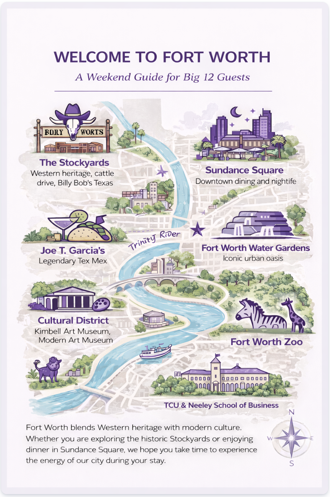
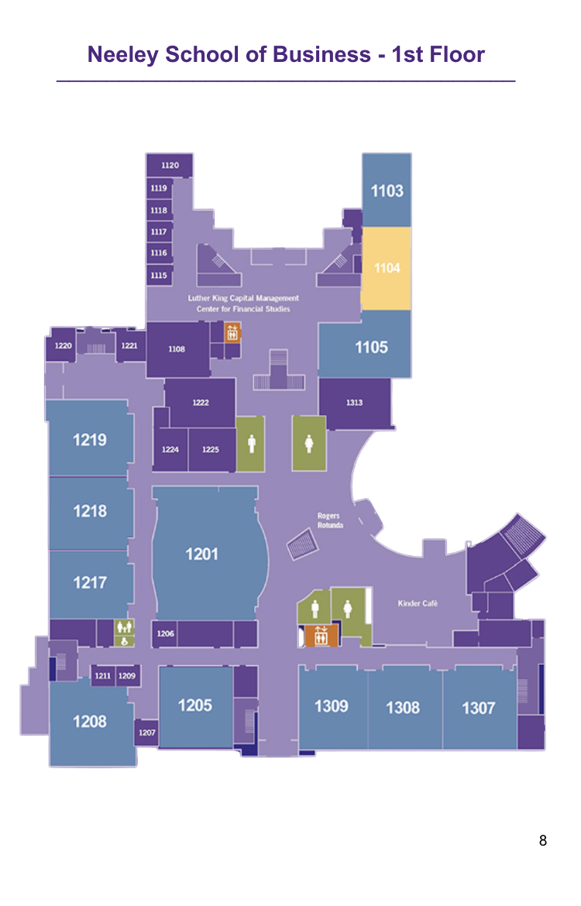
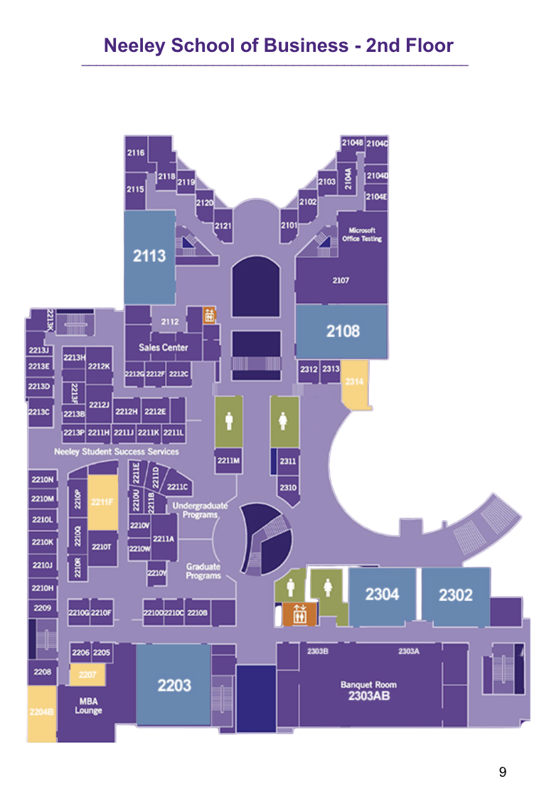
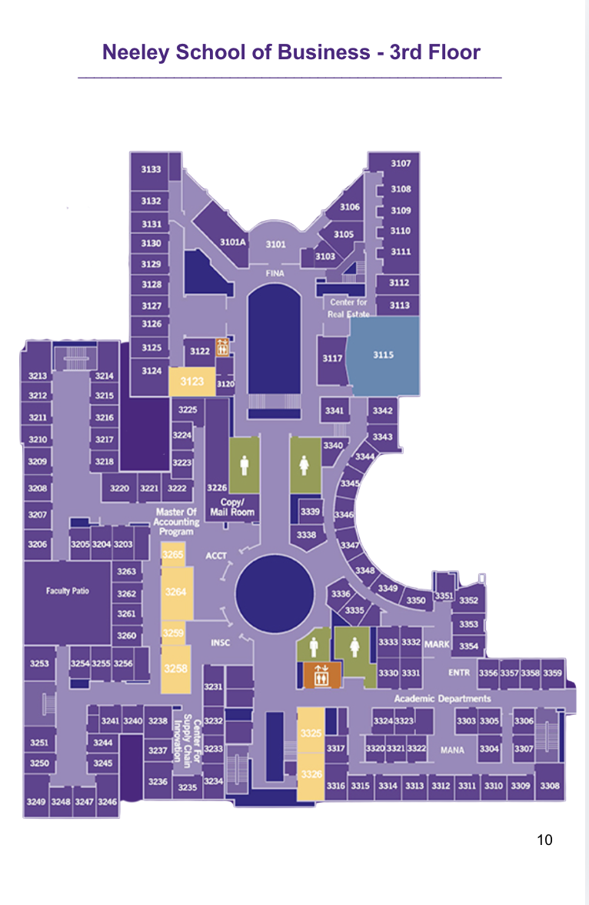

Lab Overview
For Lab 5, I used AI in a few different ways while working on my portfolio and other visuals. I wanted to try AI as a creative tool, a design helper, and a debugging helper. This lab ended up feeling very real because it matched the kind of help I was actually using while building my site.
The two main experiments I focused on were portfolio enhancement and AI image creation. I also used AI to help debug problems in my portfolio and clean up some images. That gave me a good mix of creating something from scratch, improving something I already had, and fixing things that were not working.
Experiment 1: Portfolio Enhancement
One way I used AI was to help improve the look and feel of my portfolio. I used it to help me think through colors, layout, spacing, navigation, and general design choices. I wanted my portfolio to look cleaner and more polished, but I still wanted it to feel like my work and something I could understand.
Some of the updates included building a purple and light blue theme, cleaning up the navigation, improving spacing, and making the cards and buttons feel more interactive. This was helpful because I could get ideas quickly, but I still had to decide what actually looked good and what matched the style I wanted.
What I liked most about this experiment was that it helped me move faster. Instead of sitting there staring at the screen trying to figure out how to make the site look better, I could get suggestions and then decide which ones made sense for me.
Experiment 2: Create with AI
Another experiment I did was creating a Fort Worth guide map with AI from scratch. This was one of my favorite examples because it felt more creative. Instead of only fixing or editing something, I used AI to help generate a full visual based on an idea.
The graphic highlights well-known Fort Worth locations like the Stockyards, Sundance Square, Joe T. Garcia’s, the Cultural District, the Fort Worth Zoo, and TCU. I liked this experiment because it showed that AI can help build something polished starting from a concept. At the same time, I still had to think about what places to include, what the mood should be, and whether the final image was actually clear and useful.
This made me realize that AI can help with the creative process, but it does not replace taste or judgment. I still had to decide whether the image worked and whether it matched the purpose I had in mind.
Experiment 3: Debugging and Image Cleanup
I also used AI in a more practical way by debugging my portfolio and cleaning up images. The debugging part was honestly one of the most useful things because I had several issues that were small but frustrating. Some buttons were not working because file names did not match. I also had CSS issues, weird color conflicts, and moments where the navigation did not look right.
AI helped me work through those problems faster. It did not magically fix everything by itself, but it helped me narrow down what was wrong and gave me possible fixes. I still had to test the links, check file names, and make sure the code really worked.
I also used AI-assisted tools to clean up Neeley School floor maps by removing distracting backgrounds. That was another good example of AI helping with something practical. It saved time, but I still had to decide if the final images were clear enough to use.
Understanding Spectrum
If I had to place myself on the understanding spectrum, I would say I am in the middle. I am not at the point where I can build everything completely from scratch without help, but I do understand the logic behind a lot of what I am doing.
I understand that HTML controls structure and content, while CSS controls design choices like colors, spacing, and layout. I also understand how file names, links, and folders need to match exactly for a page to work. I may still need help with the exact code, but I understand what the pieces are doing and I am getting more comfortable making changes myself.
My Vibe Coding Guidelines
- I want AI to help me think, not do all of the thinking for me.
- I want to understand the code or design choice before I submit it.
- I still need to test links, images, and formatting myself.
- I should use AI for ideas, debugging, and examples, but I still have to make the final decisions.
- If something does not sound like me or look like my style, I need to revise it.
Screenshot or Demo
One of my main AI examples was creating a Fort Worth visitor map from scratch. I used AI to help create a visual guide that highlighted places visitors might want to explore. This example was useful because it showed AI helping with creativity, layout, and visual storytelling.

Additional AI Example
I also used AI-assisted editing tools to clean up Neeley School floor maps. This was a different kind of experiment because instead of creating something from scratch, I used AI to improve existing images. The goal was to remove distracting backgrounds and make the maps cleaner for digital use.



Reflection
For Lab 5, I used AI in a way that felt very real to the work I was already doing. Instead of treating it like a fake experiment, I used examples that actually came up while I was building my portfolio and creating visuals. The two biggest ways I used AI were to improve my portfolio and to create a Fort Worth map from scratch. I also ended up using AI for debugging and image cleanup, which made the whole experience feel even more practical.
The portfolio enhancement side was probably the most helpful in terms of everyday use. I used AI to help me think through my color palette, layout, navigation, spacing, and overall look. I wanted my site to feel more polished, but I still needed it to stay simple enough that I understood what was happening. That was a big part of this lab for me. I did not want to just paste in code and hope for the best. I wanted the portfolio to actually look better, while still feeling like something I could explain.
The more creative experiment was building the Fort Worth map. I liked this example because it showed a different side of AI. Instead of just fixing or improving something, I used it to help create a new visual from scratch. That felt more fun and more open-ended. At the same time, it also reminded me that AI is only part of the process. I still had to think about the locations, the tone, the design, and whether the image would actually make sense to a viewer. AI helped get the idea moving, but I still had to decide if the final result worked.
The debugging part may have been the least glamorous, but it was probably the most useful. I had broken links, CSS issues, file name problems, and moments where things just looked weird and I did not know why. AI helped me troubleshoot faster, but it did not remove my role. I still had to test everything and make sure the fixes really worked. That part showed me that AI is helpful, but only if I stay involved and pay attention.
If I had to place myself on the understanding spectrum, I would say I understand the logic behind most of what I am doing, even if I cannot write every part from scratch yet. I know what the main pieces do, and I am getting better at recognizing what needs to be changed. My biggest takeaway is that AI can make the process faster and less intimidating, but it does not replace judgment, taste, or responsibility. I still have to be the one making the final call.